I am an assistant professor in the Department of Biostatistics at Harvard T.H. Chan School of Public Health.
My research aims to develop a new generation of inference methods and theory for modern statistics and machine learning, especially focusing on:
- Combinatorial functionals like connectivity, degree, and other topological structures of graphs, ranking, clustering, hyper graphs, etc;
- Complex data structures like high dimensionality, heterogeneity, nonlinearity, heavy-tailness, time-dependency, etc;
- Complicated algorithms like distributed algorithms, nonconvex optimization, kernel methods, etc.
Papers [by Topic]
|
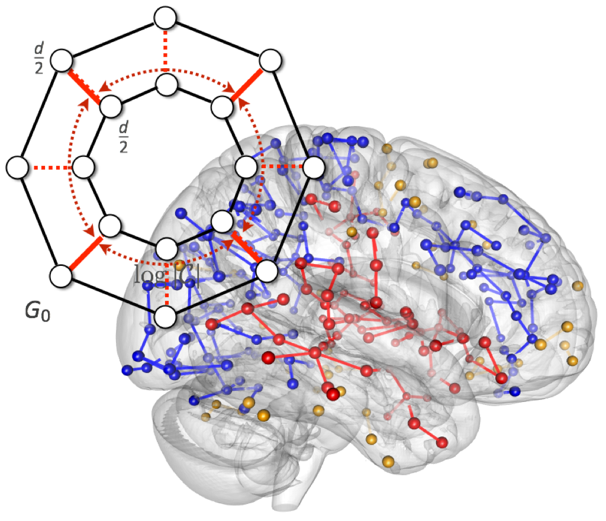
|
Combinatorial Inference for Graphical Models
(*: equal contribution) Annals of Statistics, to appear [Arxiv] |
|
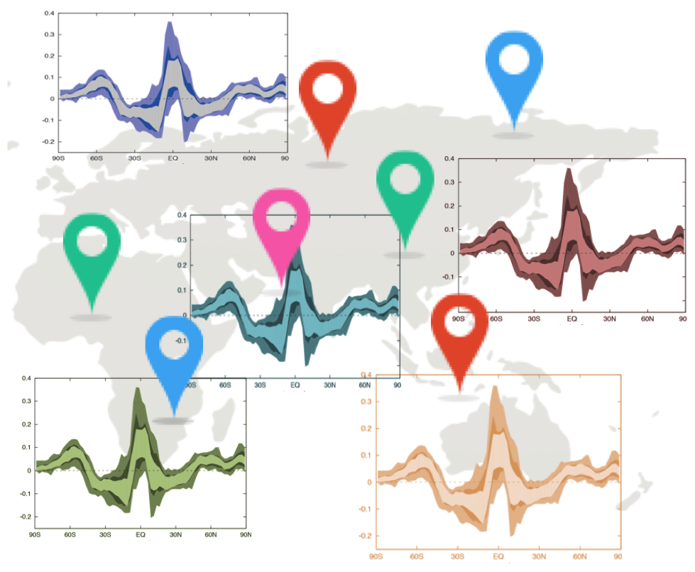
|
Distributed Testing and
Estimation under Sparse High Dimensional Models
(alphabetical order) Annals of Statistics, to appear [Arxiv] |
|
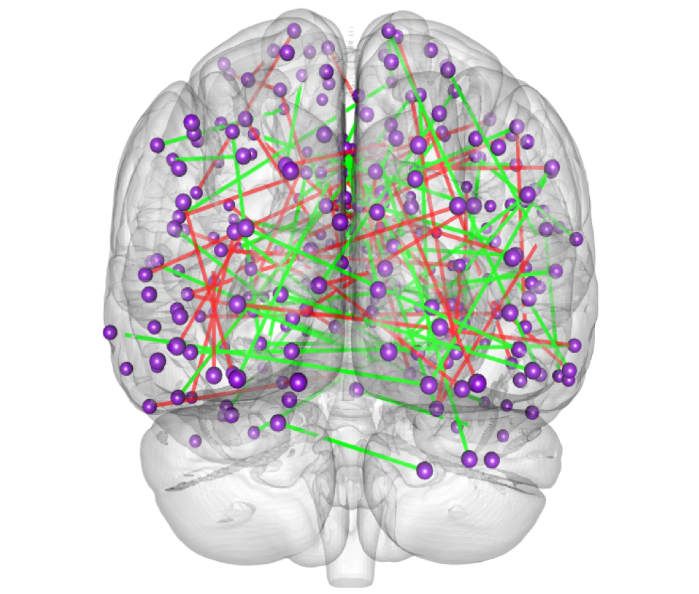
|
Post-Regularization Inference for Dynamic Nonparanormal Graphical Models
Journal of Machine Learning Research, to appear [Arxiv] |
|
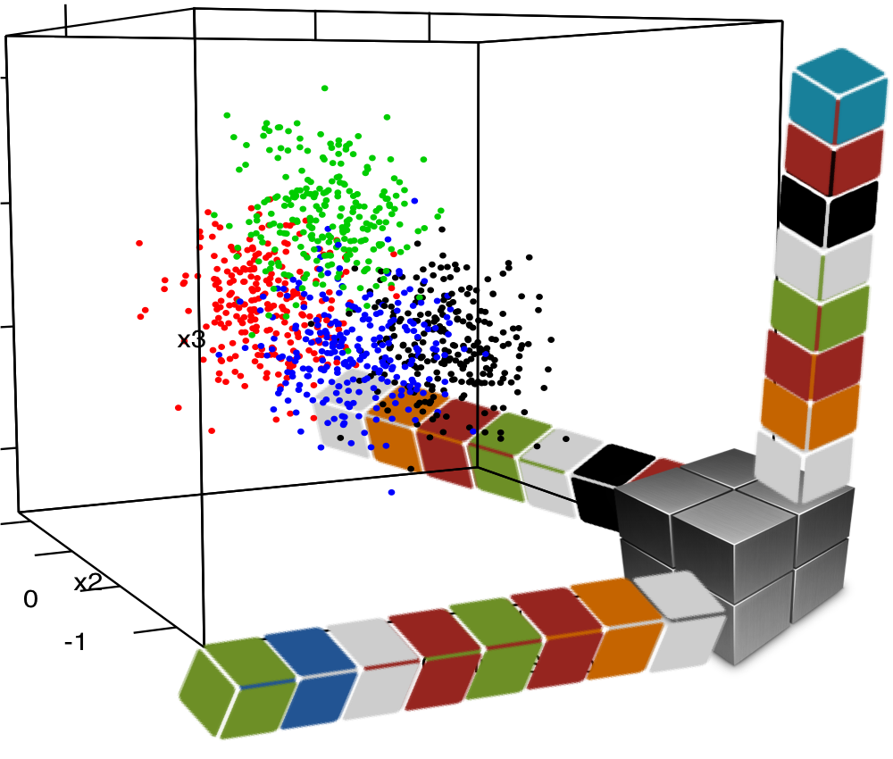
|
Provable Sparse Tensor Decomposition
Journal of the Royal Statistical Society: Series B, 2016 [Arxiv][Link] |
|
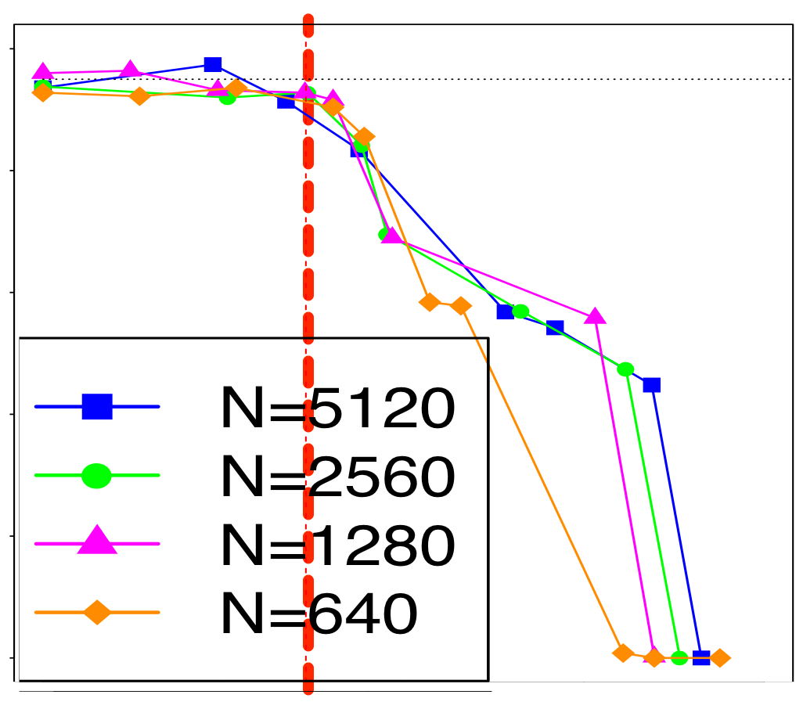
|
Nonparametric Heterogeneity Testing For Massive Data
Under revision at Bernoulli, 2016 [Arxiv] |
|
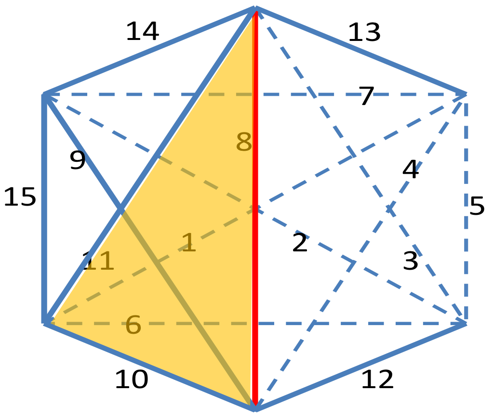
|
Graphical Fermat's Principle and Triangle-Free Graph Estimation
Under revision at Journal of Machine Learning Research, 2016 [Arxiv] |
|
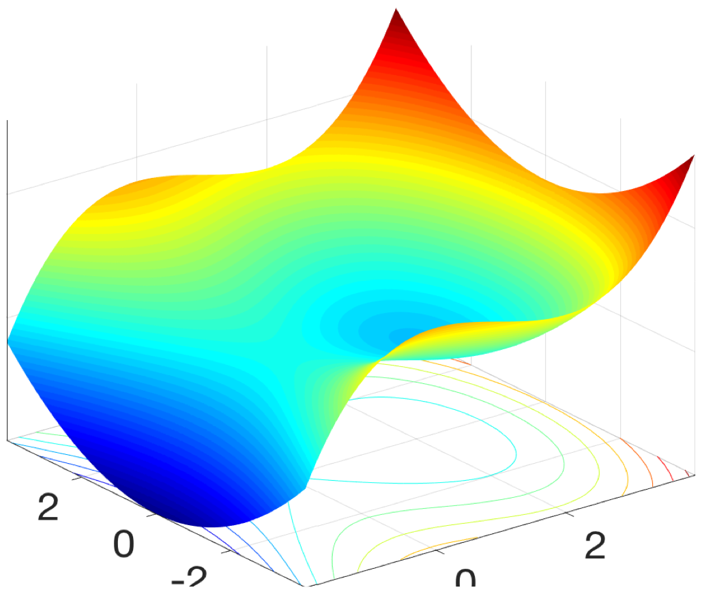
|
Symmetry, Saddle Points, and Global Geometry of Nonconvex Matrix Factorization
Under revision at IEEE Transactions on Information Theory, 2017 [Arxiv] |
|
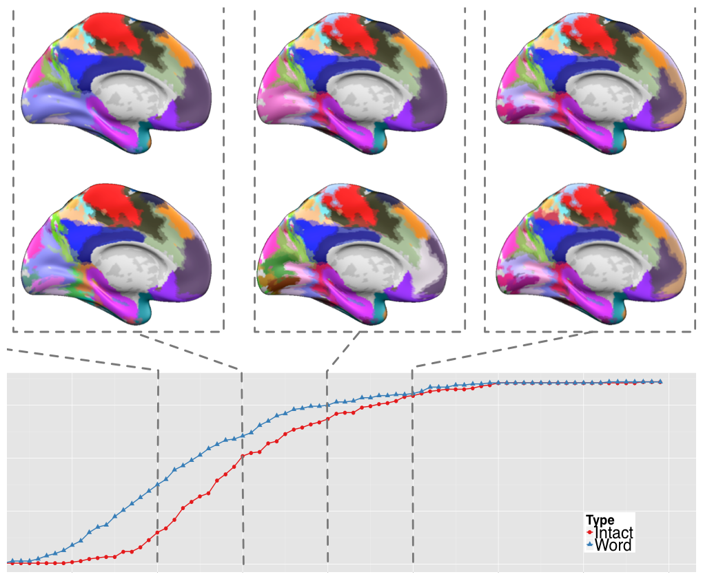
|
Adaptive Inferential Method for Monotone Graph Invariants
Submitted, 2017 [Arxiv] [R package] ICSA 2017 Student Paper Award |
|
|
Inter-Subject Analysis: Inferring Sparse Interactions with Dense Intra-Graphs
Submitted, 2017 [Arxiv] ICSA 2017 Student Paper Award |
|
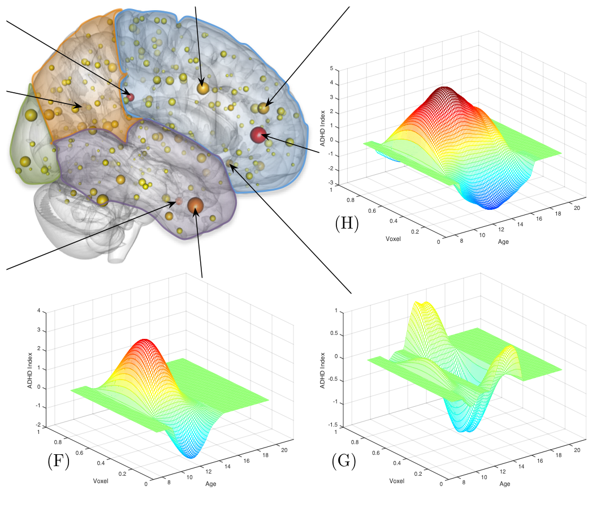
|
Kernel Meets Sieve: Post-Regularization Confidence Bands for Sparse Additive Model
Submitted, 2016 [Arxiv] [PDF] ASA Best Student Paper in Nonparametric Statistics Finalist |
|
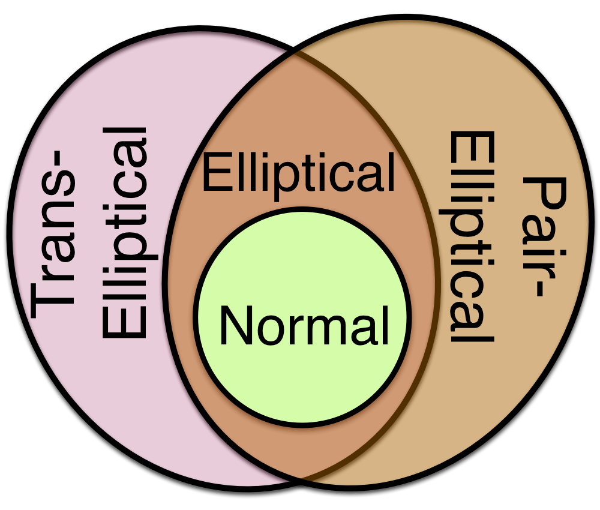
|
Robust Scatter Matrix Estimation for High Dimensional Distributions with Heavy Tails
Submitted, 2016 [PDF] |
|
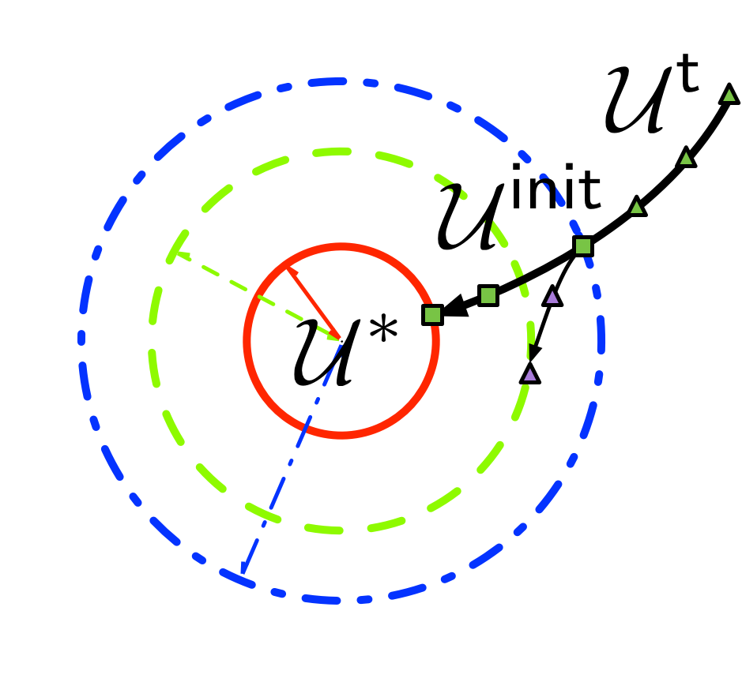
|
Sparse Principal Component Analysis in Frequency Domain for Time Series
Submitted, 2016 [PDF] |
|
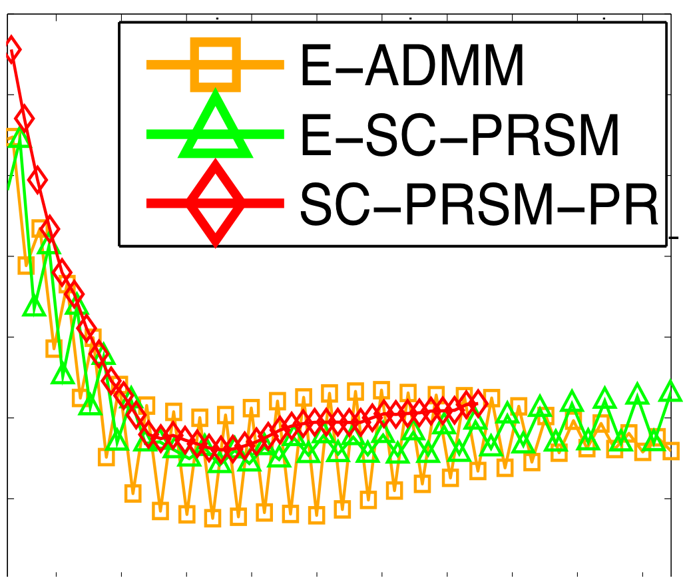
|
Application of the Strictly Contractive Peaceman-Rachford Splitting Method to Multi-block Separable Convex Programming
(alphabetical order) Splitting Methods in Communication, Imaging, Science, and Engineering (In Roland Glowinski, Stanley J. Osher, Wotao Yin (Eds.)), Springer, 2017 [Optimization Online] |